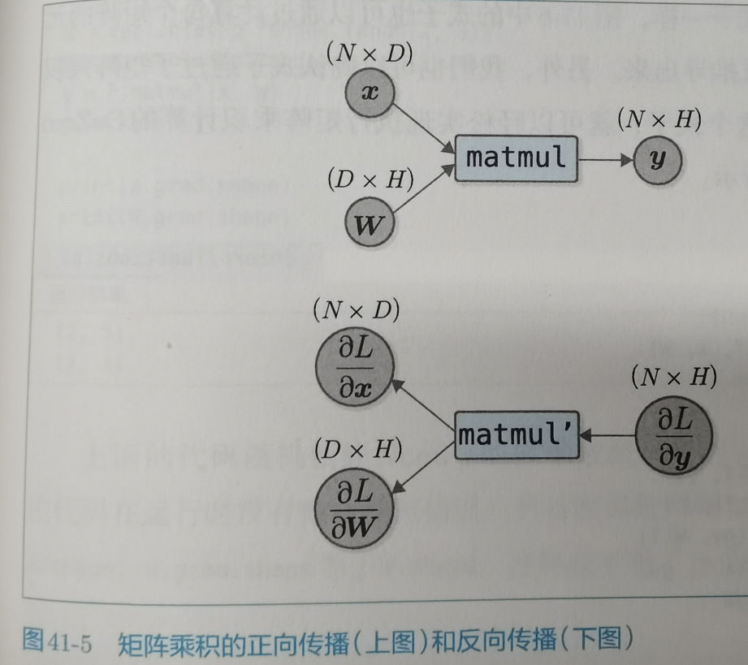

41.矩阵的乘积
41.3 矩阵乘积的反向传播
首先考虑了输入变量x是一行的这种情况
当x变化时L的变化率 = 当y变化时L的变化率 * 变换矩阵的转置
矩阵乘法的正向传播x * W = y
矩阵乘法的反向传播 x变化对L的影响 = y变化对L的影响乘以WT矩阵,W变化对L的影响= xT*y变化对L的影响

现在只能先当做就是这样了,反向传播就是乘以转置矩阵,然后需要保持矩阵的形状.所以这样干了.可能的一些思路是先考虑x是一行,然后每个x都会对矩阵的一行影响.
代码实现
调用